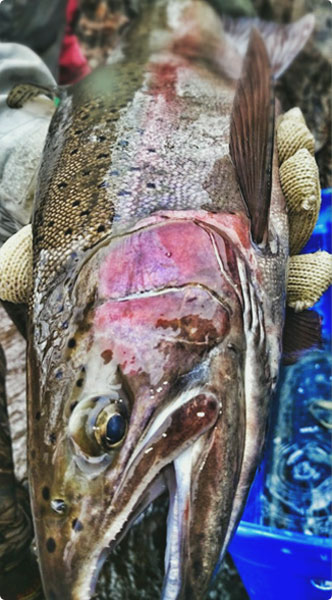

Rainbow Trout
The rainbow trout (Oncorhynchus mykiss) is a trout and species of salmonid native to cold-water tributaries of the Pacific Ocean in Asia and North America. The steelhead (sometimes called "steelhead trout") is an anadromous (sea-run) form of the coastal rainbow trout (O. m. irideus) or Columbia River redband trout (O. m. gairdneri) that usually returns to fresh water to spawn after living two to three years in the ocean. Freshwater forms that have been introduced into the Great Lakes and migrate into tributaries to spawn are also called steelhead.
Adult freshwater stream rainbow trout average between 1 and 5 lb (0.5 and 2.3 kg), while lake-dwelling and anadromous forms may reach 20 lb (9 kg). Coloration varies widely based on subspecies, forms and habitat. Adult fish are distinguished by a broad reddish stripe along the lateral line, from gills to the tail, which is most vivid in breeding males.
The scientific name of the rainbow trout is Oncorhynchus mykiss. The species was originally named by German naturalist and taxonomist Johann Julius Walbaum in 1792 based on type specimens from the Kamchatka Peninsula in Siberia. Walbaum's original species name, mykiss, was derived from the local Kamchatkan name used for the fish, mykizha. The name of the genus is from the Greek onkos ("hook") and rynchos ("nose"), in reference to the hooked jaws of males in the mating season (the "kype").
